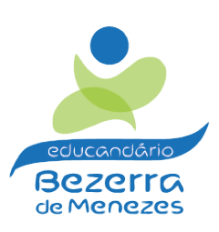

<!--Template: Inform User-->
<ion-view view-title="Sobre">
  <ion-content class="padding">
    <section>
      <p class="p_home">O Educandário Bezerra de Menezes é uma instituição de Assistência Social
        que atende crianças e adolescentes em risco e vulnerabilidade social,
        do município de Sorocaba em jornada ampliada ao horário escolar,
        incluindo também o atendimento ao núcleo familiar.
      </p> 
      <p class="p_home">No local, é desenvolvido atividades lúdicas, esportivas, educacionais,
          música, teatro, entre outras como objetivo de prevenir a ocorrência
           de risco social, desvios de conduta, drogadição, violência entre
           outros problemas sociais, objetivando o fortalecimento familiar e
           comunitário.
      </p>
      <p class="p_home">Para o desenvolvimento de todas as atividades propostas no projeto,
          a entidade conta com o apoio de colaboradores que acreditam no
           trabalho.
      </p>

       

    </section>
  </ion-content>
</ion-view>
